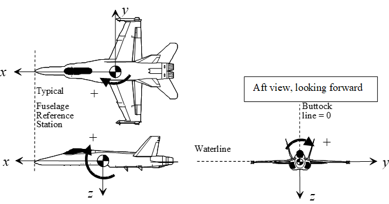

1 General Information
1.1 Unit Conversions1
(references 1.1, 1.2)
| Exponent | Prefix | Abbreviation |
|---|---|---|
| 1018 | exa | E |
| 1015 | peta | P |
| 1012 | tera | T |
| 109 | giga | G |
| 106 | mega | M |
| 103 | kilo | k |
| 102 | hecto | h |
| 10 | deka | da |
| 10-1 | deci | d |
| 10-2 | centi | c |
| 10-3 | milli | m |
| 10-6 | micro | μ |
| 10-9 | nano | n |
| 10-12 | pico | p |
| 10-15 | femto | f |
| 10-18 | atto | a |
| Multiply | by | To Obtain | |
|---|---|---|---|
| Angles | circles | 1 | circumferences |
| circles | 12 | signs | |
| circles | 21,600 | minutes | |
| circles | 2π | radians | |
| circles | 360 | degrees | |
| degrees | .01111 | quadrants | |
| degrees | 3600 | seconds | |
| degrees | 60 | minutes | |
| mils (Army) | 0.05625 | degrees | |
| mils (Navy) | 0.05729 | degrees | |
| quadrants | 90 | degrees | |
| radians | 57.2958 | degrees | |
| revolutions | 360 | degrees | |
| sphere | 4π | steradians2 | |
| Angular Acceleration | rev/min2 | 0.001745 | rad/sec2 |
| Angular Velocity | cycles/sec | 6.2814 | rads/sec |
| rads/sec | 0.1592 | rev/sec (cycles/sec) | |
| rads/sec | 9.549 | rpm | |
| rad/sec | 57.296 | deg/sec | |
| rpm | 0.01667 | rev/sec | |
| Area | acres | 43,560 | ft2 |
| ares | 100 | m2 | |
| barn | 10-28 | m2 | |
| centares | 1 | m2 | |
| circular mils | 7.854 x 10-7 | in2 | |
| cm2 | 100 | mm2 | |
| ft2 | 144 | in2 | |
| ft2 | 0.09290304 | m2 | |
| in2 | 6.452 | cm2 | |
| in2 | 106 | mils2 | |
| m2 | 10.76 | ft2 | |
| section | 2,589,988.1 | m2 | |
| st. mile2 | 27,780,000 | ft2 | |
| st. mile2 | 2.590 | km2 | |
| township | 93,239,572 | m2 | |
| yd2 | 9 | ft2 | |
| yd2 | 0.8361 | m2 | |
| Density | grams/cm3 | 0.03613 | pounds/in3 |
| grams/cm3 | 62.43 | pounds/ft3 | |
| kg/m3 | 16.018463 | pounds/ft3 | |
| slugs/ft3 | 515.4 | kg/m3 | |
| pounds/in3 | 1728 | pounds/ft3 | |
| slugs/ft3 | 1.94 | grams/cm3 | |
| Electrical Quantities | amperes | 0.1 | abamperes |
| amperes | 1.0365x10-5 | faradays/sec | |
| amperes | 2.998x109 | statamperes | |
| amperes.cicmil | 1.973x105 | amperes/cm2 | |
| ampere-hours | 3,600 | coulombs | |
| ampere-hours | 1.079x1013 | statcoulombs | |
| ampere turn/cm | 1.257 | gilberts/cm | |
| ampere turn/cm | 1.257 | oersteds | |
| coulombs | 0.1 | abcoulombs | |
| coulombs | 6.243x1018 | electronic charges | |
| coulombs | 1.037x10-5 | faradays | |
| coulombs | 2.998x109 | statcoulombs | |
| faradays | 26.8 | ampere-hours | |
| farads | 10-9 | abfarads | |
| farads | 106 | microfarads | |
| farads | 8.986x1011 | statfarads | |
| gausses | 1 | maxwells/cm2 | |
| gausses | 6.452 | lines/in2 | |
| gilberts | 0.7958 | ampere turns | |
| henries | 109 | abhenries | |
| henries | 1.113x10-12 | stathenries | |
| maxwells | 1 | lines | |
| oersteds | 2.998x1010 | statoersteds | |
| ohms | 109 | abohms | |
| ohms | 1.113x1012 | statohms | |
| ohm-cm | 6.015x106 | circ mil-ohms/ft | |
| volts | 108 | abvolts | |
| volts | 0.003336 | statvolts | |
| Energy & Work | Btu | 1.055x1010 | ergs |
| Btu | 1055.1 | Joules (N-m) | |
| Btu | 2.9302x10-4 | kilowatt-hours | |
| Btu | 251.99 calories (gram) | ||
| Btu | 778.03 | foot-pounds | |
| calories | 4.1868 | watt-seconds | |
| calories | 3.088 | foot-pounds | |
| electron volt | 1.519x10-22 | Btu | |
| ergs | 1 | dyne-centimeters | |
| ergs | 7.376x108 | foot-pounds | |
| foot-pounds | 1.3558 | Joules (N-m)** | |
| foot-pounds | 3.766x10-7 | kilowatt-hours | |
| foot-pounds | 5.051x10-7 | horsepower-hours | |
| hp-hours | 0.7457 | kilowatt-hours | |
| hp-hours | 2546.1 | Btu | |
| Joules | 0.23889 | calories | |
| Joules | 1 | Newton-meters | |
| Joules | 1 | watt-seconds | |
| Joules | 107 | ergs | |
| kilowatt-hours | 3.6x106 | Joules | |
| thermies | 4.1868x106 | Joules | |
| watt-seconds | 0.73756 | foot-pounds | |
| Force3 | dynes | 3.597x10-5 | ounces |
| kilograms-force | 9.80665 | Newtons | |
| kiloponds | 9.80665 | Newtons | |
| kip (kilopound-force) | 4,448.221 | Newtons | |
| Newtons | 0.224808931 | pounds | |
| Newtons | 100,000 | dynes | |
| ounces | 20 | pennyweights | |
| ounces (troy) | 480 grains | ||
| pennyweights | 24 | grains | |
| pounds4 | 16 | ounces | |
| pounds (troy) | 12 | ounces (troy) | |
| pounds | 32.174 | poundals5 | |
| pounds | 4.4482216 | Newtons | |
| pounds (troy) | 5760 | grains (troy) | |
| quintals (long) | 112 | pounds | |
| quintals (met.) | 100 | kilograms | |
| stones | 14 | pounds | |
| tons (long) | 2,240 | pounds | |
| tons (metric) | 1.102 | tons (short) | |
| tons (short) | 2000 | pounds |
Fuel gal 5.8 lbs (U.S. AV gas)
gal 7.5 lbs ( U.S. oil)
Liter (jet A) 0.812 kilograms
Liter (jet A) 1.794 pounds
Note: Fuel densities are temperature dependent
Illumination candles 1 lumens/steradian
||candles/cm2 π lamberts ||candlepower 12.566 lumens ||foot-candles 1 lumens/ft2 ||foot-candles 10.764 lux ||foot-lamberts 1 lumen/ft2 ||lamberts 295.72 candles/ft2 ||lamberts 929.03 lumens/ft2 ||lumens 0.001496 watts ||lumens/in2 1 fots ||lumens/m2 1 lux ||lux 1 meter-candles ||lux 0.0001 fots ||meter-candles 1 lumens/m2 ||millilamberts 0.2957 candles/ft2 ||millilamberts 0.929 foot-lamberts ||milliphots 0.929 foot-candles ||milliphots 0.929 lumens/ft2 ||milliphots 10 meter-candles ||
|| ||Multiply by To Obtain
Length angstroms 10-10 meters
astronmcl units 1.496x1011 meters
||cable lengths 120 fathoms
caliber 0.01 inches
||cubit 0.4572 meters ||fermi 10-15 meters ||fathoms 6 feet
feet 12 inches
furlongs 40 rods
hands 4 inches
inches 2.54 cm
||kilometers 3281 feet ||kilometers 0.53996 nautical miles ||leagues (U.S.) 3 nautical miles ||light years 5.88x1012 statute miles ||links (engnr’s) 12 inches ||links (srvyr’s) 7.92 inches
meters 3.28084 feet
meters 39.370079 inches
||microns 0.16 meters ||mils 0.001 inches ||nautical miles 1.15078 statute miles ||nautical miles 1,852 meters ||nautical miles 6,076.115486 feet ||paces 0.762 meters ||parsec 1.9163x1013 statute miles ||perch 5.0292 meters ||pica (printers) 0.0042175176 meters ||point (printers) 0.0003514598 meters ||pole (=rod) 5.0292 meters ||skein 109.728 meters ||statute miles 5,280 feet ||statute miles 1.609344 kilometers ||statute miles 8 furlongs
yards 3 feet
||
||Multiply by To Obtain
Linear feet/sec2 1.09728 kilometers/hr/sec
Acceleration feet/sec2 0.3048 meters/sec2
||feet/sec2 0.6818 mph/sec
g 32.174049 feet/sec2
||g 9.80665 meters/sec2 ||gals (Galileo) 0.01 meters/sec2 ||knots/sec 1.6878 feet/sec2 ||meters/sec2 3.6 kilometers/hr/sec
mph/sec 0.447 meters/sec2
||mph/sec 1.609 kilometers/hr/sec ||
Mass* carats 200 milligrams
||grams 0.035274 ounces
grains 6.479891x10-5 kilograms
||hndrdwght long 50.80 234544 kilograms ||hndrdwght shrt 45.359237 kilograms ||kilograms 0.06852 slugs
kilograms 6.024x1026 atomic mass units
kilograms 2.2046 pounds
ounces (avd)* 28.349523125 grams
ounces (troy)* 31.1034768 grams
||pounds (mass) 1 pounds (force) ||pounds (mass) 0.45359237 kilograms
pounds (mass) 0.031081 slugs
scuples (apoth) 0.0012959782 kilograms
slugs 32.174 pounds
slugs 14.594 kilograms
||tons (long) 1016.047 kilograms ||tons (assay) 0.02916 kilograms ||tons (metric) 1000 kilograms ||tons (short) 907.1847 kilograms ||* Converting between force and mass (e.g. kg force to kg mass or pound force to pound mass) uses \(g = 32.174 ft/sec\^2\) ||
|| || || ||Multiply by To Obtain
Moments gram-cm2 0.737x10-7 slug-ft2
of pound-ft2* 0.031081 slug-ft2
Inertia* slug-in2 0.0069444 slug-ft2
slug-ft2 1.3546 kg-m2
slug-ft2 32.174 pound-ft2
slug-ft2 12.00 pound-inch-sec2
||slug-ft2 192.00 ounce-inch-sec2
Power btu/min 0.01758 kilowatts
||calories(kg)/min 3087.46 foot-pounds/min ergs/sec 7.376x10-8 foot-pounds/sec ||ft(lbs)/min 2.260x10-5 kilowatts ||ft(lbs)/sec 0.07712 btu/min ||ft(lbs)/sec 1.356 watts ||hp 550 ft(lb)/sec
hp 33,000 ft(lbs)/min
||hp 10.69 calories (kg)/min ||hp 745.7 watts \[J/sec\] ||hp (metric) 735.5 watts
hp 1.1014 horsepower (metric)
kilowatts 1.341 horsepower
||watts 107 ergs/sec
watts 1 Joules/sec
||
Pressure atmospheres 14.696 pounds/in2
||atmospheres 29.92 inches of Hg ||atmospheres 76 cm of Hg ||bars 1,000,000 dynes/cm2 ||bars 29.52 inches of Hg ||barye 0.1 Newtons/m2 ||dynes/cm2 10 Newtons/m2
inches of H2O 5.20237 pound/ft2
||inches of Hg 70.72619 pounds/ft2 ||inches of Hg 0.491154 pounds/in2 ||inches of Hg 13.595 inches of H2O ||kiloPascals 100 bars
hectoPascals 1 millibars
millibars 0.02953 inches of Hg
mm of Hg 0.019337 pounds/in2
|| || ||Multiply by To Obtain
Pressure mm of Hg 133.32 Newtons/m2
Cont. Pascals 1 Newton/m2
pieze 1000 Newtons/m2
pounds/ft2 0.01414 inches of Hg
pounds/ft2 47.88 Newtons/m2
pounds/in2 2.036 inches of Hg
pounds/in2 27.681 inches of H2O
||pounds/in2 6894.75728 Pascal ||torrs 133.32 Newtons/m2 ||
Temperature Kelvin = oC+273.15o
Rankin = oF + 459.67o
oCentigrade = \[^o^*F* − 32^o^\] 5/9
||oFahrenheit = (9/5)oC + 32
Time days (solar) 24 hours
days (sidereal) 23.934 hours
days (solar) 1.0027 days (sidereal)
||hours 60 minutes ||minutes 60 seconds ||months (sdrl) 27d + 7hr +43min +11.47sec ||months (lunar) 29d +12hr +44min + 2.78sec ||year 365.24219879 days
Torque * foot-pounds 1.3558 Newton-meters
foot-pounds 0.1383 kilogram-meters
||ounce-inches 72.008 gram-centimeters
pound-inches 1129800 dyne-centimeters
Velocity inches/sec 0.0254 meters/sec
||knots 1.68781 feet/sec
km/hr 0.621371 mph
km/hr 0.9113 feet/sec
Knots (kts) 1.15078 mph
Knots (kts) 1.852 km/hr
Knots (kts) 0.51444 meters/sec
meters/sec 3.281 ft/sec
meters/sec 3.6 km/hr
meters/sec 196,85 feet/min
mph 1.466667 feet/sec
||Multiply by To Obtain
Viscosity centistokes 10-6 m2/sec
||ft2/sec 0.0929 m2/sec ||pound sec/ ft2 47.880258 Newton secs/ m2 ||poise 0.1 Newton secs/ m2
rhe 10 m2/Newton second
Volume acre-feet 43,560 ft3
acre-feet 1,233 m3
acre-feet 3.259x105 gals (U.S.)
barrels 31.5 gals (U.S.)
||board-feet 144 in3
bushels 1.244 ft3
bushels 32 quarts (dry)
bushels 4 pecks
||cm3 0.001 liters ||cm3 0.03381 fluid ounces
cm3 0.06102 in3
cord-feet 4x4x1 ft3
cords 128 ft3
cups 0.5 pints (liquid)
||dram (fluid) 3.69669x10-6 m3 ||ft3 0.0283167 m3 ||ft3 1728 in3 ||ft3 28.32 liters ||ft3 7.481 gals (U.S.) ||gals (Imperial) 1.2009 gals (U.S.) ||gals (Imperial) 277.42 in3 ||gals (U.K.) 4546.1 cm3 ||gals (U.S.) 231 in3 ||gals (U.S.) 0.003785 m3 ||gals (U.S.) 3.785 liters ||gals (U.S.) 4 quarts (liquid) ||gals (U.S.) 0.0238095 barrels (U.S.) ||gils 7.219 in3 ||hogshead 2 barrels ||in3 16.39 cm3 ||liters 0.02838 bushels ||liters 0.9081 quarts (dry) ||liters 1.057 quarts (liquid) ||liters 1000 cm3
liters 61.03 in3
m3 1.308 yd3
||Multiply by To Obtain
Volume m3 1000 liters
Cont. m3 264.2 gals (U.S.)
||m3 35.314667 ft3 ||mil-feet (circ.) 0.0001545 cm3 ||ounces (U.K.) 28.413 cm3
ounces (U.S.) 29.574 cm3
pecks 8 quarts (dry)
||pecks 8.81 liters
perches 0.7008 m3
perches 24.75 ft3
||pints (dry) 33.60 in3 ||pints (liquid) 28.88 in3 ||pints (liquid) 4 gals ||quarts (dry) 1.164 quarts (liquid) ||quarts 2 pints ||register tons 100 ft3 ||shipping ton (U.S.) 40 ft3 ||shipping ton (Br.) 42 ft3 ||steres 1000 liters ||tablespoons 0.0625 cups ||teaspoons 0.3333 tablespoons
1.2 Greek Alphabet
|Α α Alpha |Β β Beta |Γ γ Gamma |∆ δ Delta |Ε ε Epsilon |Ζ ζ Zeta |Η η Eta |Θ θ Theta |Ι ι Iota |Κ κ Kappa |Λ λ Lambda |Μ μ Mu |Ν ν Nu |Ξ ξ Xi |Ο ο Omicron |Π π Pi |p ρ Rho |Σ σ Sigma |Τ τ Tau |Υ υ Upsilon |Φ φ Phi |Χ χ Chi |Ψ ψ Psi |Ω ω Omega
1.3 Greek Symbols Used for Aircraft
α angle of attack (degrees or radians)
ατ tail angle of attack
β angle of sideslip (degrees)
γ flight path angle relative to horizontal
γ specific heat ratio (1.4 for air)
δ relative pressure ratio (Pa/Po)
δa aileron deflection angle
δr rudder deflection angle
δe elevator deflection angle
ε downwash angle at tail (degrees)
ζ damping ratio
η efficiency
θ body axis/pitch angle
θ relative temperature ratio, Ta/To
ι angle of incidence
ιF thrust angle of incidence
ιT horizontal tail angle of incidence
λ pressure lag constant
Λ wing sweep angle
μ coefficient of absolute viscosity = ρν
μ Mach cone angle
ν kinematic viscosity = μ/g
π nondimensional parameter
ρ density
ρa ambient air density
ρo standard atmospheric density (slugs/ft3 )
σ air density ratio (ρα /ρο)
σcr critical density
τ shear stress (pounds per square inch) psi
τR Roll Mode Time Constant (sec)
φ bank angle (degrees)
ψ aircraft heading (degrees)
ω frequency
ω rotational velocity (radians per second)
ωd damped natural frequency
ωn natural undamped frequency
1.4 Common Subscripts
|a aileron |a ambient |alt at test altitude |avg average |c calibrated |e elevator |e equivalent |E endurance leg of mission |F final |I initial |i inbound leg of mission |i indicated |ic instrument corrected |l subscript for coefficient of rolling moment |m mission conditions |m pitching moment |n yawing moment |O outbound leg of mission |o sea-level standard day |o sea level |r reserve leg of mission |r rudder |S standard day |s standard day at altitude |SL sea level |T True |t test day
1.5 Common Abbreviations
a lift curve slope
a linear acceleration (ft/sec2 or m/sec2)
a speed of sound
A/A air-to-air
a/c aircraft
AAA anti aircraft artillery
AC aerodynamic center
ac alternating current
ACM air combat maneuvering
A/D analog to digital
ADC air data computer
ADC analog-to-digital converter
ADF automatic direction finder
ADI attitude direction indicator
AFMC Air Force Materiel Command
AFOTEC Air Force Operational Test and Evaluation Center
A/G air-to-ground
AGL above ground level
AHRS attitude heading reference system
AM amplitude modulation
AOA angle of attack
AOED age of ephemeris data
APU auxiliary power unit
AR air refuel (mode of flight)
AR aspect ratio = b2 / S
ARDP advanced radar data processor
ARSP advanced radar signal processor
ASPJ airborne self protection jammer
ATC air traffic control
avg average
ax longitudinal acceleration
ay lateral acceleration
AZ azimuth
b span of wing (feet)
B/N bombadier/navigator
bbl barrel
BHP brake horsepower
BICOMS bistatic coherent measurement system
BID bus interface device
BIT built-in test
BSFC brake specific fuel consumption
Btu British thermal unit
BW bandwidth
oC degrees centigrade...see T
c brake specific fuel consumption (BSFC)
c speed of light in a vacuum
(186,282 miles/sec = 299,792,500 \[m/s\])
c mean aerodynamic chord (MAC) of a wing
C/A coarse acquisition
C/No carrier to noise ratio
CADC central air data computer
CARD cost analysis requirement document
CD coefficient of drag
CD i induced drag coefficient
CD o zero lift drag coefficient
(also parasitic drag coefficient for symmetric wing)
CDI course deviation indicator
CDMA code division multiplex access
CDR critical design review
CDRL contracts data requirement list
CDU control display unit
CEA circular error average
CEP circular error probable
Cf coefficient of friction
CFE contractor furnished equipment
CFT conformal fuel tank
cg center of gravity (normally in % MAC)
CH hinge moment coefficient
cine cinetheodolite
Cl rolling moment coefficient, airfoil section lift co efficient
CL lift coefficient
CLHQ closed loop handling qualities
Clp roll damping coefficient
Clr roll moment due to yaw rate coefficient
Cm pitching moment coefficient
CM moment coefficient
cm centimeters
cos cosine
cot cotangent
Clβ (dihedral) rolling moment due to sideslip
Clδa aileron power coefficient
Cmq pitch damping coefficient
Cmα longitudinal static stability coefficient
Cmδe elevator power coefficient
Cn yawing moment coefficient
Cnr yaw damping coefficient
cnst constant
Cnβ directional stability coefficient
Cnδa adverse yaw coefficient
Cnδr rudder power coefficient
COTS commercial, off–the-shelf
CP center of pressure
CP propeller power coefficient
CPU central processing unit
cr wing root chord
CRM crew resource management
ct wing tip chord
CTF combined test force
CY calendar year
CY side force coefficient
CYβ side force due to sideslip coefficient
CYδr side force due to rudder coefficient
D diameter
D drag
D/A digital/analog
DAC digital to analog converter
DAPS data acquisition and processing system
DARPA Defense Advanced Research Projects Agency
db decibel
DC direct current
deg degrees
DG directional gyro
DGPS differential GPS
DMA Defense Mapping Agency
DME distance measuring equipment
DoD Department of Defense
DOP dilution of precision
DSN defense switched network
DT development test
DTC data transfer cartridge
DTIC Defense Technical Information Center
e Oswald efficiency factor
e natural mathematical constant = 2.718281828459
E energy
E lift-to-drag ratio (CL/CD, L/D)
EAS equivalent airspeed
EC electronic combat
ECCM electronic counter countermeasures
ECM electronic countermeasures
ECP engineering change proposal
ECS environmental control system
EGT exhaust gas temperature
EL elevation
ELINT electronic intelligence
ELV expendable launch vehicle
EM electromagnetic
Emax maximum lift-to-drag ratio
EMC electromagnetic compatibility
EMI electromagnetic interference
EMP electromagnetic pulse
EO electro optical
EOM equations of motion
EPR engine pressure ratio
EPROM electrically programmable read only memory
Es specific energy
ESA European Space Agency
ESD Electronic Systems Division
ESHP equivalent shaft horsepower
ETA estimate time of arrival
ETE estimate time en-route
EW early warning
EW electronic warfare
oF degrees Fahrenheit
f frequency...hertz (originally cycles per second)
F.S. fuselage station
Fa aileron force
FAA Federal Aviation Administration
FAR Federal Aviation Regulation
FCF functional check flight
FDC flight data computer
Fe elevator force
Fex excess thrust
Fg gross thrust
FL flight level
Flip flight information publication
FLIR forward-looking infra red
FM frequency modulation
FMC fully mission capable
FMS flight management system
FMS foreign military sales
Fn net thrust
Fn/δ corrected thrust parameter
FOM figure of merit
FOT&E follow-on test & evaluation
FOUO for official use only
FOV field of view
fpm feet per minute
fps feet per second
FQT formal qualification test
Fr rudder force
FRD functional requirements document
FRL fuselage reference line
FRL force, rudder, left
FRR force, rudder, right
FRR flight readiness review
FSD full scale development
FSI full scale integration
ft feet
ft-lb English unit of work...foot-pound...
fwd forward
FY fiscal year
g acceleration due to gravity at altitude
G gravitational constant = 6.6732x10-11 \[N m^2^/kg^2^\]
GAO Government Accounting Office
GCA ground control approach
GCI ground controlled intercept
GDOP geometric dilution of precision
GMT Greenwich mean time
go standard acceleration due to gravity
(sea level, 46 deg latitude)
GPS global positioning system
GS ground speed
GSI glide slope indicator
h % MAC
H altitude
HARM high-speed anti-radiation missile
Hc calibrated altitude
(assumed to be pressure altitude in flight test)
HD density altitude
HDDR high density digital recorder
HDOP horizontal dilution of precision
HF high frequency
Hg mercury
Hi indicated altitude
hm stick-fixed maneuver point (%MAC)
h'm stick-free maneuver point (%MAC)
hn stick-fixed neutral point (%MAC)
h'n stick-free neutral point (%MAC)
hp horsepower
hr hour
hrs hours
HSI horizontal situation indicator
HUD head-up display
HV host vehicle
Hz hertz
I/O input/output
IAS indicated airspeed
IAW in accordance with
ICAO International Civilian Aviation Organization
ICU interface computer unit
ICBM intercontinental ballistic missile
IFF identification friend or foe
IFR instrument flight rules
ILS instrument landing system
IMC instrument meteorological conditions
IMN indicated Mach number
IMU inertial measuring unit
in inch
INS inertial navigation system
INU inertial navigation unit
IOC initial operational capability
IOT&E initial operational test & evaluation
IUGG International Union of Geodesy and Geographics
Ix, Ix, Iz moments of inertia
Ixy, Ixz, Iyz products of inertia
J joules energy, (Newton-Meter)
J propeller advance ratio
J&S jamming and spoofing
JCS Joint Chiefs of Staff
K Kelvin (absolute temperature)
K temperature probe recovery factor
K, k1 constants
KCAS knots calibrated airspeed
KEAS knots equivalent airspeed
kg kilogram, metric unit of mass
KIAS knots indicated airspeed
KISS keep it simple, stupid
km kilometer
KTAS knots true airspeed
kt knots
L Lift (lbs)
l length
L rolling moment
L/D Lift-to-drag ratio
LANTIRN low altitude navigation and targeting IR for night
lat lateral
lb pound
lbf English unit of force, often just lb (pound)
lbm English unit of mass, often just lb (slug)
LCC life cycle cost
LCD liquid crystal display
LED light emitting diode
LLH latitude, longitude, height
ln natural log, log to the base e
LO low observables
Log common log, to the base 10
LOS line of sight
lt distance from cg to tail's aerodynamic cent
Lδa rolling moment due to aileron deflection
M moment (ft-lbs)
M Mach number
m mass
m meter (length)
M pitching moment
MAG magnetic
MAP manifold pressure
mb millibar
MCA minimum crossing altitude
Mcr critical Mach number
Md drag divergence Mach number
Mac mean aerodynamic cord
MGC mean geometric chord
MHz megahertz
mHZ millihertz
Mic instrument-corrected Mach number
MilSpec military specification
MIL-STD military standard (publication)
min minute (time)
Mm millimeters
MOA memorandum of agreement
MOE measure of effectiveness
MOP measures of performance
MOU memorandum of understanding
MP manifold pressure
MSL mean sea level
MTBF mean time between failures
MTTR mean time to repair
MX maintenance
N newton (force)
N rotational speed (RPM)
n load factor (g's)
N yawing moment
N1 low pressure compressor speed
N2 high pressure compressor speed
NACA National Advisory Committee for Aeronautics
NADC Naval Air Development Center
NASA National Aeronautics and Space Administration
NAV navigation
NED North, East, Down
NM, nm nautical mile (6080 feet)
NOE nap-of-the-earth
NOFORN not releasable to foreign nationals
NOTAM notice to airmen
NRC National Research Council (Canada)
NWC Naval Weapons Center
Nx longitudinal load factor (g's)
Ny lateral load factor (g's)
Nz normal load factor (g's)
OAT outside air temperature
OAT on aircraft test
OEI One engine inoperative
OPR Office of Primary Responsibility
OSD Office of the Secretary of Defense
OT&E operational test & evaluation
p aircraft roll rate (degrees/sec)
P pressure (N/m2 ,pounds per square inch)
Pa ambient pressure
PCM pulse code modulation
P-code precision code
PD pulse Doppler
PDM pulse duration modulation
PGM precision guided munitions
PIO pilot induced oscillations
Piw total thrust horsepower required
Pk probability of kill
PLF power for level flight
Po standard atmospheric pressure (2116.22 lb/ft2 )
POC point of contact
Pp pitot pressure
ppm parts per million
Prop propeller
Ps static pressure
PS pulse search
psf pounds per square foot
psi pounds per square inch
PT total pressure
PW pulse width
Q or q dynamic pressure = 0.5ρV 2
q aircraft pitch rate
Q engine torque
qc impact pressure (Pt − Pa)
oR degrees Rankine = oF + 459.67
R perfect gas constant = 8314.34 \[J/kmol K\]
r aircraft yaw rate (degrees/sec)
R earth radius
R range
R&D research and development
R&M reliability and maintainability
R/C rate of climb
rad radians
Radar radio detection and ranging
RAF resultant aerodynamic force
RAM radar absorbing material
RAT ram air turbine
RCS radar cross section
Re Reynolds number (dimensionless)
REP range error probable
RF range factor
RLG ring laser gyro
rms root mean square
RNG range
ROC rate of climb
ROC required obstacle clearance
RPM revolutions per minute (a.k.a. N)
R/T receiver/transmitter
RTO Rejected/refused takeoff
RTO responsible test organization
S wing area (ft2 or m2)
Sa horizontal distance between liftoff and specified height or between specified height and touch down.
SA selective availability
SA situational awareness
SE specific endurance
sec seconds (time or angle)
SFC specific fuel consumption
Sg ground roll distance
SHP shaft horsepower
SI international system of units
SIGINT signal intelligence
sin sine
SL sea level
SLAM standoff land attack missile
SLR side-looking radar
S/N serial number
S/N signal -to-noise ratio
SOF special operations forces
SOW stand-off weapon
SR specific range
SRB safety review board
ST tail area
std standard
ST total takeoff or landing distance (Sa + Sg)
STOL short takeoff and landing
STOVL short takeoff and vertical landing
T period of oscillation
T temperature
t thickness
T, t time (sec)
t/c thickness-to-chord ratio
Ta ambient temperature
TACAN tactical air navigation
tan tangent
Tas standard temperature at altitude
TAS true airspeed
TBD to be determined
TD touchdown
TED trailing edge down
TEL trailing edge left
TEMP test and evaluation master plan
TER trailing edge right
TEU trailing edge up
TF terrain following
THP Thrust Horsepower
THPalt horsepower available at altitude
THPmax maximum horsepower available
THPmin minimum horsepower required
THPSL horsepower required at sea level
TIT turbine inlet temperature
TM telemetry
TMN true Mach number
T/O takeoff
To standard sea level temperature (59.0 oF, 15 oC)
TO technical order
TRB technical review board
TRD technical requirements document
TRP technical resources plan
TSFC thrust specific fuel consumption
TSPI time, space, position information
Tt total temperature
TV television
T/W thrust to weight ratio
TWT track while scan
TWT traveling wave tube
u velocity along aircraft's x-axis
UAV uninhabited aerial vehicle
UHF ultra high frequency
UPT undergraduate pilot training
USA US Army
USAF US Air Force
USCG US Coast Guard
USMC US Marine Corps
USN US Navy
UT universal time
UV ultraviolet
v velocity along aircraft's lateral axis
VH horizontal tail volume coefficient
VV vertical tail volume coefficient
V1 takeoff decision speed
V2 takeoff safety speed
VA design maneuvering speed
VAC volts AC
Vb buffet airspeed
VB design speed for max gust intensity
Vbr velocity for best range
Vc calibrated airspeed
VD design diving speed
VDC volts DC
VDOP vertical dilution of precision
Ve equivalent velocity
VFE maximum flap extended speed
VFR visual flight rules
Vg ground speed
VHF very high frequency
Vi indicated airspeed
Vic indicated airspeed corrected for instrument error
Viw velocity at sea level std day and std weight
VLE max speed with landing gear extended
VLO max speed while operating landing gear
VLOF lift off speed
VLSIC very large scale integrated circuit
Vmc minimum directional control speed
VMC visual meteorological conditions
Vmca minimum directional control speed in the air
Vmcg minimum directional control speed on the ground
Vmo/Mmo maximum operating limit speed
Vmu minimum unstick speed
VNE never exceed velocity
Vno max structural cruising speed
Vopt optimum velocity for endurance flight
VOR VHF omni-directional range
VORTAC VHF omni-directional range Tactical Air Navi gation
VPmin velocity for minimum power
VPmin,SL velocity for minimum power at sea level
VR rotation speed
VS stall speed
VS0 stall speed in landing configuration
VS1 stall speed in some defined configuration
VSTOL vertical/short takeoff and landing
VT true airspeed
VTOL vertical takeoff & landing
VVI vertical velocity indicator
VW wind velocity
VX speed for best angle of climb
VY speed for best rate of climb
W weight
w component of velocity along aircraft's Z-axis
WDL weapon data link
W/δ weight-to-pressure ratio
Wf fuel weight
WGS-84 World Geodetic System, 1984
WI watch item
WOD word of day
WOW weight on wheels
WPT waypoint
wrt with respect to
, corrected fuel flow parameter
W/S wing loading
Wf fuel flow (lb/hr)
x aircraft longitudinal axis,
a line running through the nose & tail
Xac distance from leading edge to aerodynamic cen ter
Xlink cross link
y aircraft lateral axis, a line running the wingtips
Y force along y-axis
Y-code encrypted P-code
z aircraft vertical or yaw axis,
a line perpendicular to the longitudinal and lat eral axes
∆Hic altimeter instrument correction
∆Hpc altimeter position error correction
∆Pp pitot pressure error
∆Ps static pressure error
∆Vc scale attitude correction to airspeed
∆Vic instrument correction to airspeed indicator
∆Vpc correction for airspeed position error
∞ infinity, or freestream conditions
1.6 Sign Conventions (reference 1.8)
Editor’s note There is near unanimous agreement on most sign conventions except for pilot inputs and control surface deflections. Although individual organizations generally are consistent in-house, confusion often arises when trying to mathematically translate inputs & deflections from one organization to another. This section documents the generally accepted “body axes” sign conventions then discusses the rationale for several viewpoints addressing the “inputs & deflections” debate. Below is the SFTE sign convention.
Wind Axes Sign Convention
Winds are listed according to the direction they are coming from. Airports refer winds to magnetic North while winds at altitude are typically referred to true North. Headwind is true airspeed minus ground speed. (Vw=VT-Vg).
Body Axes Sign Convention
The generally accepted body axes sign convention is based on the establishment of a three-dimensional axis system with the following properties:
1. It is right-handed orthogonal
2. Its origin is at the vehicle's reference center of gravity (defined by builder).
3. The axis system moves with the airframe.

Translational displacements, rates, accelerations, & forces are positive along the positive body axes directions. In spite of the simplicity of this logic, it is important to recognize that lift and normal load factor are positive in the negative z direction and the drag is positive in the negative x direction.
Angular displacements, rates, accelerations & moments, are positive according to the “right hand rule” (a clockwise rotation while looking in the direction of the positive axis) as shown in the figure.
The body axes, forces & translations along them, and moments & rotations about them are shown with arrows indicating the positive direction.
Angular displacements, rates, accelerations & moments, are positive according to the “right hand rule” (a clockwise rotation while looking in the direction of the positive axis) as shown in the figure.
The body axes, forces & translations along them, and moments & rotations about them are shown with arrows indicating the positive direction.

Angle of attack is positive clockwise from the projection of the velocity vector on the xz plane to the reference x body axis. The angle of sideslip is positive clockwise from the xz plane to the velocity vector (wind in the pilot’s right ear).
Aircraft true heading is the angle between true North and the projection of the x-body axis onto the horizontal plane. Mag. heading refers to mag North
The velocity vector is measured relative to the air mass while the flightpath is measured relative to the ground. They are equivalent only when winds are zero.
Flightpath heading angle (ground track heading) σg, is the horizontal angle between true North and the projection of the flightpath on the horizontal plane. Positive rotation is from north to east.
€
Flightpath elevation angle; γ, is the vertical angle between the flightpath and the horizontal plane. Positive rotation is up. During a descent, this parameter is commonly known as glide path angle.
Flightpath bank angle; μ, is the angle between the plane formed by the velocity vector and the lift vector and the vertical plane containing the velocity vector. Positive rotation is clockwise about the velocity vector, looking forward.
Fuselage reference station (FRS), Water line (WL), and Buttock line (BL) are reference coordinates established by the design group.
| Summary of Generally Accepted Body Axes Sign Convention | ||
|---|---|---|
| Parameter Name | Symbol | Positive Direction |
| Translational Measurements | ||
| Longitudinal axis | x | from ref cg towards nose |
| Lateral axis | y | from reference cg towards right wing tip |
| Vertical axis | z | from reference cg towards vehicle bottom (body axis) |
| Longitudinal velocity | u | along +x axis |
| Lateral velocity | v | along +y axis |
| Vertical velocity | w | along +z axis |
| Long. acceleration | ax | along + x axis |
| Lateral acceleration | ay | along +y axis |
| Vertical acceleration | az | along +z axis |
| Longitudinal load factor | Nx | along +x axis |
| Lateral load factor | Ny | along +y-axis |
| Normal load factor | Nz | along –z axis |
| Longitudinal force | Fx | along the +x axis |
| Lateral force | Fy | along the +y axis |
| Normal force | Fz | along the + z axis |
| Drag force | D | along the –x axis |
| Side force | Y | along the + y axis |
| Lift Force | L | along the –z axis |
| Summary of Generally Accepted Body Axes Sign Convention | ||
|---|---|---|
| Parameter Name | Symbol | Positive Direction |
| Angular Measurements | ||
| Bank angle | φ | right wing down |
| Pitch angle | θ | nose-up |
| Heading | ψ | 0 North, +Eastward |
| Angle of attack | α | normal flight attitude |
| Angle of sideslip | β | “wind in the right ear” |
| Roll rate | p | right wing down |
| Pitch rate | q | nose up |
| Yaw rate | r | nose right |
| Roll moment | L | right wing down |
| Pitch moment | M | nose up |
| Yaw moment | N | nose right |
| Flightpath bank angle | μ | right wing down |
| Flightpath elevation | γ | climb |
| Flightpath heading | σg | 0 true North, + East- ward |